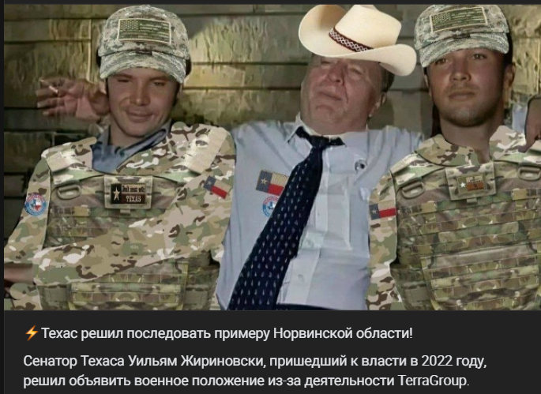
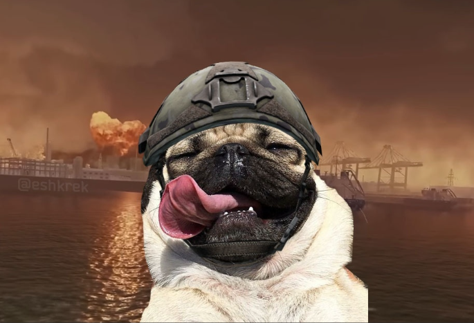
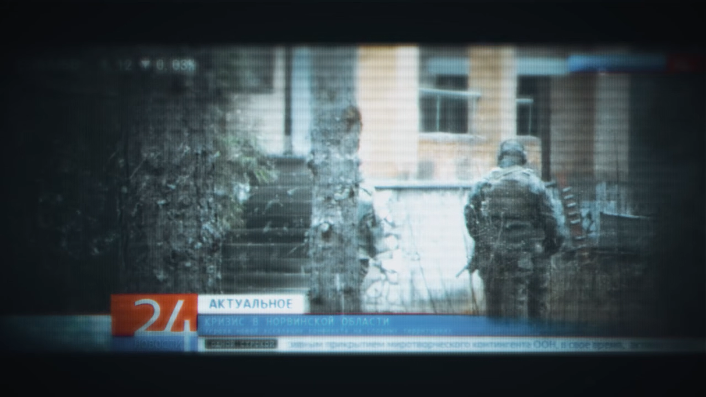
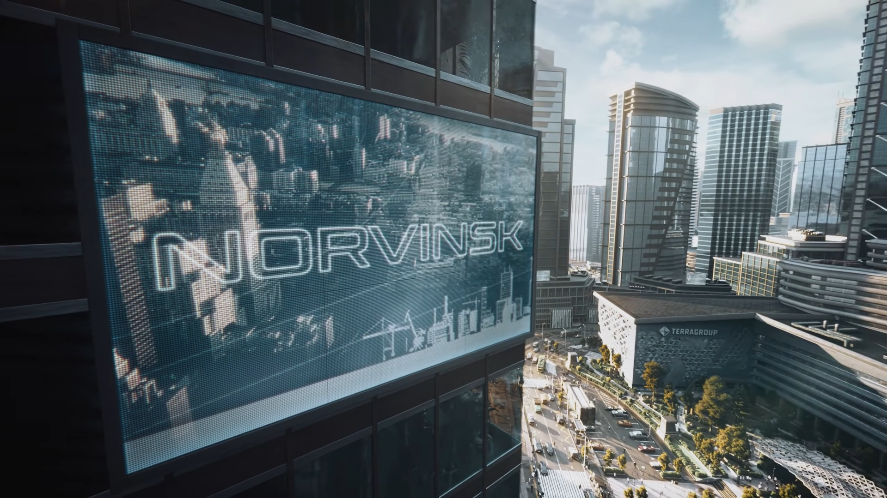

Norvinsk Сводка
Norvinsk Сводка


@Местные
Новые стандарты призыва в ЧВК "BEAR". Руководство компании ввело новые правила.
@Импортные
Раскол в ЧВК "USEC". Бойцы недовольны закрытием ресторанов. Одна часть солдат бежит в сторону границы.
@Общие
Редактор газеты поехал чердаком! Обширный инсульт и отказ головного мозга настигли нашего редактора Максима.
@Общие
Телефонные мошенники в Норвинской области! Всем жителям необходимо позаботиться о защите своих сбережений.
@Общие
В центре города Тарков замечены колонны бронетехники и множество вооруженных людей говорящих по английски в форме ЧВК USEC, происходит что то странное. Следим за ситуацией "Кажется, началось..." - местный житель Вася Толстый

